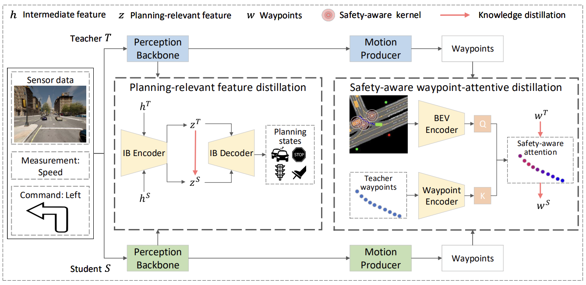
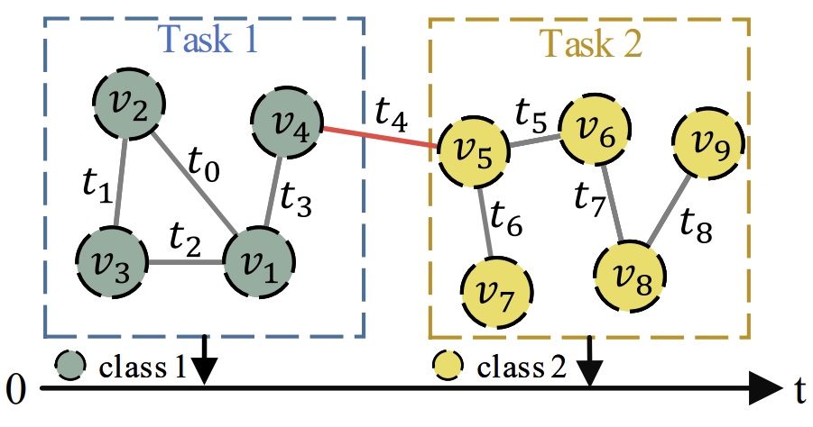

Selected Publications & Preprints
|

|
On the Road to Portability: Compressing End-to-End Motion Planner for Autonomous DrivingKaituo Feng, Changsheng Li, Dongchun Ren, Ye Yuan, Guoren Wang We constitute the first attempt to explore a knowledge distillation method to compress end-to-end autonomous driving planners. Paper Code |

|
Keypoint-based Progressive Chain-of-Thought Distillation for LLMsKaituo Feng, Changsheng Li, Xiaolu Zhang, Jun Zhou, Ye Yuan, Guoren Wang We propose a new compression method to progressively distill the emergent reasoning capabilities of LLMs into smaller models, as well as encouraging the precise mimicry of significant tokens. Paper |
|

|
Towards Open Temporal Graph Neural NetworksKaituo Feng, Changsheng Li, Xiaolu Zhang, Jun Zhou We propose the first class-incremental learning for temporal GNNs, allowing temporal graphs to evolve in the real-world scenarios with an open class set Paper Code |